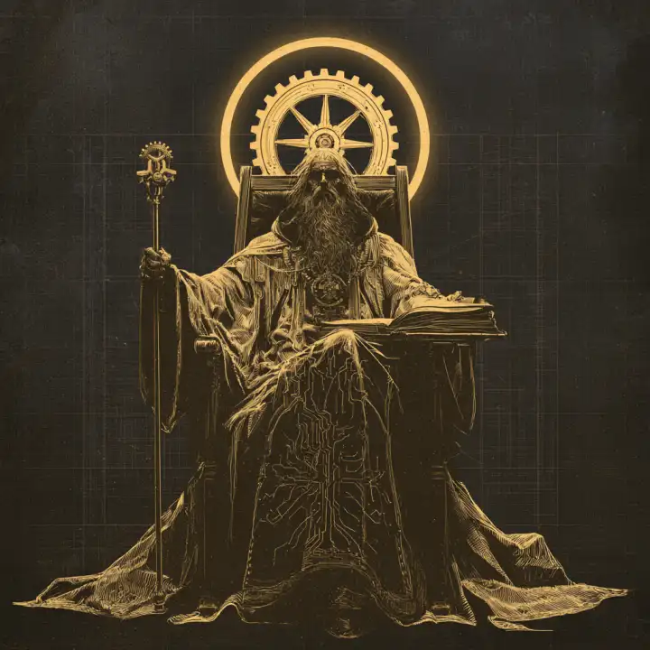

Что это
Медиа об инженерном лидерстве, выросшее из Telegram-канала. Аналитика трендов, разборы кейсов и фреймворки решений — с лёгкой иронией орденских хроник, но с проверенными источниками в каждом материале.
капитул инженерного ордена
Кодекс инженерного ордена: индустрия, расшифрованная для магистров разработки.
Новости разработки и AI-трансформации, переведённые на язык решений. Каждый разбор заканчивается главным: что это значит лично для тебя и твоей команды.
Подключиться к каналуПокровители инженерного ремесла: восемь аспектов пути CTO — от единого кодекса до зелёного пайплайна. Индустрия сама дошла до готики; Орден лишь ведёт её летопись всерьёз.

Кто мы такие и зачем ведём эту летопись.
Медиа об инженерном лидерстве, выросшее из Telegram-канала. Аналитика трендов, разборы кейсов и фреймворки решений — с лёгкой иронией орденских хроник, но с проверенными источниками в каждом материале.
Тимлиды, техлиды и инженерные менеджеры — все, кто отвечает не только за собственный код, но и за людей, процессы и результат команды. И те, кто метит выше.
Не пересказ новостей, а их расшифровка: каждый разбор завершается выводом «что это значит для тебя» — решением, которое можно принять уже на этой неделе.
Краткие вести индустрии — по существу. Полный разбор — по ссылке.
VS Code 1.142 добавил канвасы (превью) — интерактивные поверхности для совместной работы с агентом за пределами чат-ленты, вроде канбана, который двигают человек и агент; чаты теперь переносятся между папками и git worktree с сохранением истории. Для организаций — принудительное включение песочницы агентов и централизованные политики разрешений: дефолты безопасности перестали быть личным выбором разработчика. Разбор →
GitHub открыл общий доступ к Gemini 4 Argon в Copilot на всех поверхностях; для Business/Enterprise модель включается автоматически, если админ явно не запретил. Вводная цена $2/$10 за миллион токенов действует до 30 ноября (далее $4/$20), а 16 ноября из Copilot уходят Claude Opus 4.8, Opus 5 и GPT-5.6 Terra — мультимодельность платформы окончательно превращается в операционную заботу команд. Разбор →
Bloom Security раскрыла SlugFest: доверие публикации в npm привязывалось к имени GitHub-репозитория, а не к неизменяемому ID — переименованный репозиторий позволял любому занять slug и выпускать чужой пакет с валидной Sigstore-подписью. Под угрозой оказались 1500+ пакетов с 10M+ скачиваний; от репорта до фикса прошло 120+ дней. Отдельный усилитель риска — AI-агенты, тянущие зависимости без человека в цикле. Разбор →
5–7 октября GitHub пережил четыре критических инцидента; на пике сбоя 5.10 ошибкой завершались 47% запусков CI на hosted-раннерах, 72% заданий не стартовали вовремя. Self-hosted раннеры не пострадали — гибридная стратегия из оптимизации затрат превращается в аргумент надёжности. Разбор →
Claude Frontier Academy построена по медицинской модели: очный интенсив, затем 12-недельная резидентура с живым проектом в своей организации и две аттестации. Вендор впервые в таком масштабе признаёт: узкое место внедрения AI в энтерпрайзе — люди, а не модели. Разбор →
GitHub выпустил в превью dynamic workflows: мультиагентная работа описывается кодом с явным control flow — чекпоинты, параллелизм, структурированная передача результатов. Поворот индустрии от свободного делегирования агентам к явной оркестрации. Разбор →
Последние материалы канала. Полные тексты — на страницах разборов.
Показаны труды одного примарха. Показать все →
Ваш пайплайн доверяет имени, а имя можно занять: 13 октября Bloom Security показала, что 1500+ npm-пакетов с 10M+ скачиваний были открыты к перехвату. Без единой украденной учётки.
«Дайте агентам автономию» — мантра индустрии агентных инструментов. 1 октября GitHub признал обратное: нужен явный control flow, а не доверенный исполнитель.
Пока конвейер зелёный, CI выглядит бесплатным приложением к репозиторию. 5–7 октября GitHub напомнил, что это прод: четыре critical-инцидента за три дня.
Купить томограф — не значит получить врача. Anthropic за $100 млн признала то же про AI: узкое место — люди, которые доведут модели до продакшена.
«PR мержится долго» — жалоба без диагноза. С 25 сентября GitHub показывает, где именно лежит время ревью: три стадии жизни PR, по каждой — медиана и p90.
Однажды в общем ящике компании появится письмо: «наши агенты взаимодействовали с вашими системами» — уведомления OpenAI получили уже «десятки» организаций. 25–26 сентября OpenAI признала: она уведомила «десятки» организаций — правительства, университеты, агентства, включая SEC, Census Bureau и Минобразования США.
Каналы связи
Основной канал — Telegram. Остальные готовятся к запуску.